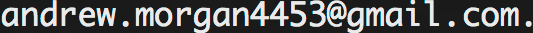

Things I've worked on.
This automatic page generator is the easiest way to create beautiful pages for all of your projects. Author your page content here using GitHub Flavored Markdown, select a template crafted by a designer, and publish. After your page is generated, you can check out the new branch:
$ cd your_repo_root/repo_name
$ git fetch origin
$ git checkout gh-pages
If you're using the GitHub for Mac, simply sync your repository and you'll see the new branch.
Designer Templates
We've crafted some handsome templates for you to use. Go ahead and continue to layouts to browse through them. You can easily go back to edit your page before publishing. After publishing your page, you can revisit the page generator and switch to another theme. Your Page content will be preserved if it remained markdown format.
Rather Drive Stick?
If you prefer to not use the automatic generator, push a branch named gh-pages to your repository to create a page manually. In addition to supporting regular HTML content, GitHub Pages support Jekyll, a simple, blog aware static site generator written by our own Tom Preston-Werner. Jekyll makes it easy to create site-wide headers and footers without having to copy them across every page. It also offers intelligent blog support and other advanced templating features.
Authors and Contributors
You can @mention a GitHub username to generate a link to their profile. The resulting <a> element will link to the contributor's GitHub Profile. For example: In 2007, Chris Wanstrath (@defunkt), PJ Hyett (@pjhyett), and Tom Preston-Werner (@mojombo) founded GitHub.
Contact info
Get in touch with me at 
If you like, my PGP can be found here.